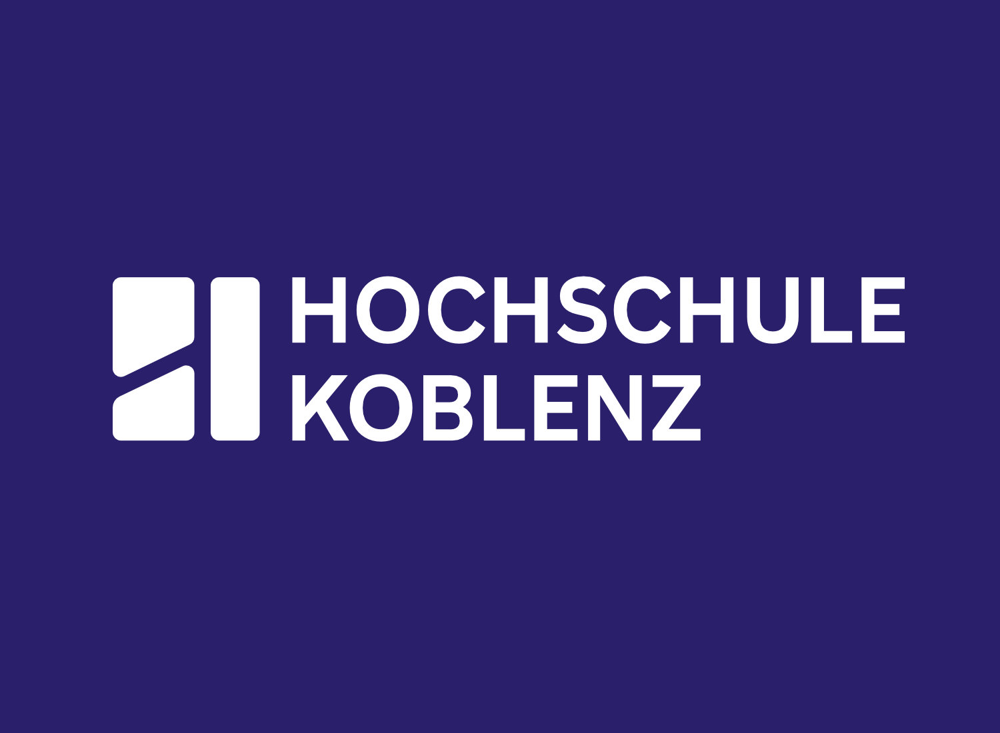
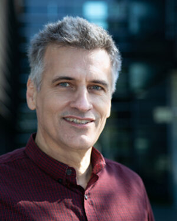
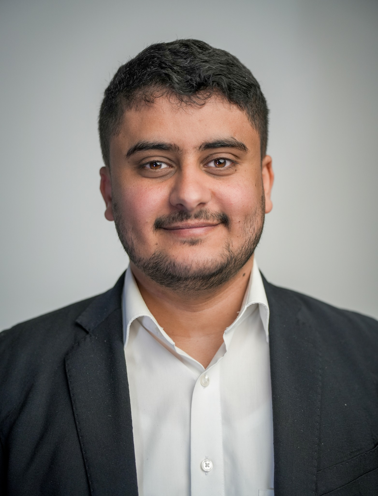
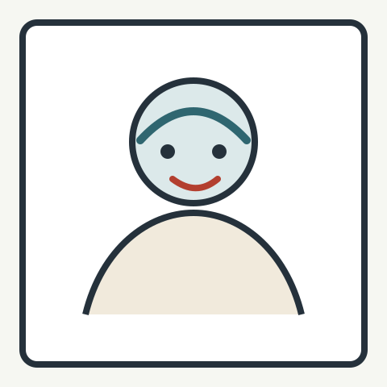

Prof. Dr. Babette Dellen
Computer vision, computational neuroscience, biophysics, robotics, medical imaging, and product-unit learning systems.
Google Scholar
Group Team
Meet the group leadership and current student researchers. Individual profile details are available from each member card when provided.
Group leadership and supervision.
Computer vision, computational neuroscience, biophysics, robotics, medical imaging, and product-unit learning systems.
Google Scholar
Computational intelligence, mathematical modelling, scientific machine learning, and complex-valued/product-unit neural networks.
Current student researchers in the group.

Machine learning researcher with a background in theoretical physics, currently focused on medical imaging, computer vision, and robust AI systems.
Open profile and CV
Student researcher contributing to applied AI and medical image analysis projects.
Student researcher working on complex-valued neural networks, product units, MRI reconstruction, and deep learning methods.